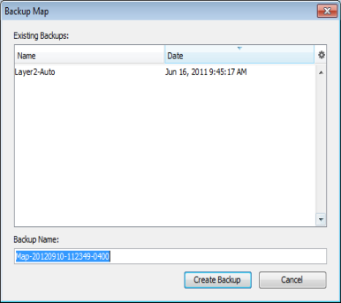
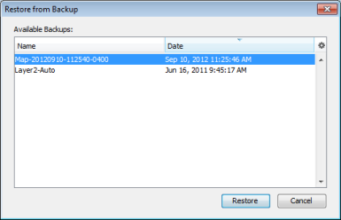
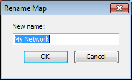
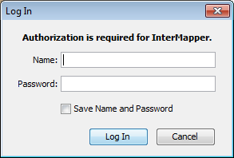

Use the File menu to create new maps, open existing maps, and to save maps that you have edited. You can also import and export maps, and can set up and print maps. The table below shows the commands available from the File menu, and which commands are available from the Map or Map List window.
Note: Use shortcuts with Control key (Windows) or Command key (Macintosh.)
IMRA = Map List window, InterMapper RemoteAccess
IM = Map List window, InterMapper
Map = Map window
| Command | Description |
| New Map |
Creates a new map. |
| Open Recent (submenu) | |
| Close |
Closes the current window. |
| Backup... |
Backs up the current map. |
| Restore... |
Restores the current map from a backup. |
| Rename... |
Renames the selected map. |
| Duplicate... | |
| Disable... |
If you have administrator privileges, use this command to disable the current map (Map Window) or the selected map (Map List window.) |
| Import (submenu) |
Choose from these submenu commands:
|
| Export (submenu) |
Choose from these submenu commands:
|
| Server (submenu) |
Choose from these submenu commands: |
| Page Setup... | |
| Print... |
Prints the current window on the currently selected printer. (Map) |
| Print Single Page... |
Prints a single page of a map in the current view. (Map) |
| Exit/Quit |
Exits the application. Note: On Macintosh, this command is available from the InterMapper or IM RemoteAccess menu. |
Creates a new empty map. See the Autodiscovery menu command for details about creating a map automatically.
Choose a recently-opened map from a submenu.
Closes the current window.
Note: Closing a map window does not stop the map's devices from being polled or from sending notifications. To prevent a map from being polled, disable the map in the Enabled Maps section of the Server Settings window.

Makes a snapshot backup of the current map.
The Backup Map window shows a list of previous backups of the selected map. Enter a name for the backup or accept the default name, then click OK.

Restores from a previous backup of a map.
The Restore Map window shows a list of previous backups. Click the backup you want to restore, the click OK.

Renames the selected map.
Enter a new name for the selected map, then click OK.
Makes a copy of the selected map.
If you have administrator privileges, use this command to disable the current map (Map Window) or the selected map (Map List window.) A confirmation dialog appears.
Use the Import submenu to choose from the available Import commands:
Use the Import > Map... command to import a map from a tab-delimited, comma-delimited, or XML file. For more information, see Importing Data Into Maps.
Copies a map file saved on the InterMapper RemoteAccess machine to the InterMapper server and makes it available. (Use the Export... command to save the file on the InterMapper RemoteAccess machine.)
Imports custom probe files to your server. For more information, see the InterMapper Developer Guide.
Imports an SNMP MIB file for a specific device or family of devices. You can use the MIB file information to enhance the formatting of the displayed data. For example, certain views (especially in log files and the SNMP Table views) use the MIB data to display numeric values as the human-readable strings.
Use the Export Map... command to save a copy of your map on your local machine or network drive. This is an easy way to copy a map from one server to another. After you export the map file, you can then import it to a different server. You can also export a tab-delimited file for use in a spreadsheet or database.
For more information, see Exporting Data From Maps.

In the Map List window, click the server you want to log into, then choose Log In...from the File menu. An authentication window appears:
Enter a Name and Password. If you want to save the Name and Password, click to select Save Name and Password.
Note: SASL authentication is used for logins.
In the Map List window, click a map on the server you want to log out from, then choose Log Out. You are disconnected from the selected server.
Note: Open windows for any maps on the selected server remain open after you log out, but the maps are dimmed to indicate that they are no longer active.
Opens a standard Page Setup dialog.
Prints the current window on the currently selected printer. This operation uses as many pages as necessary to print the entire map or window contents.
Exits the application.